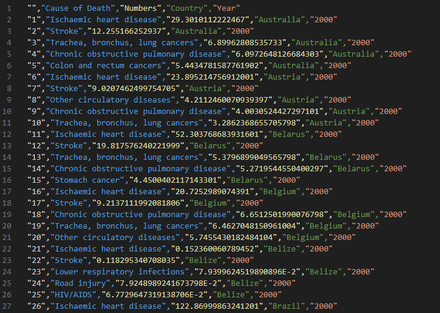
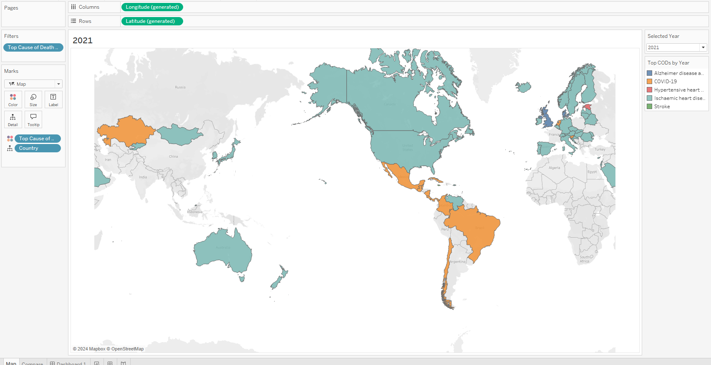
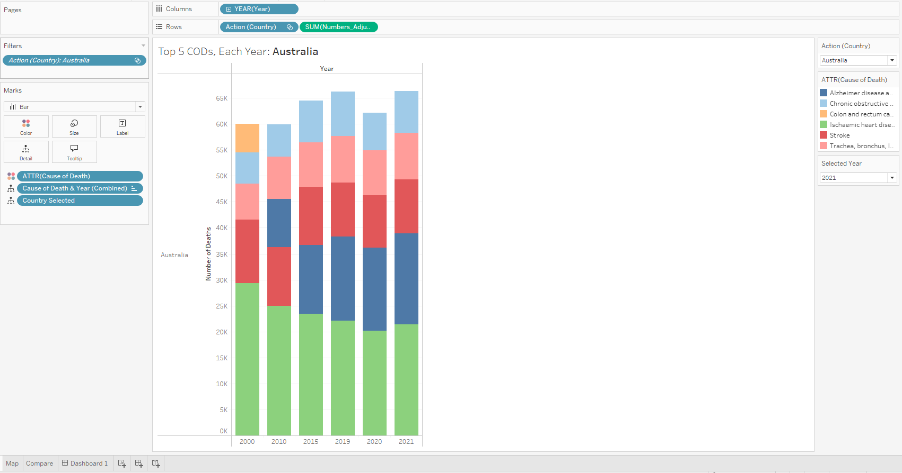
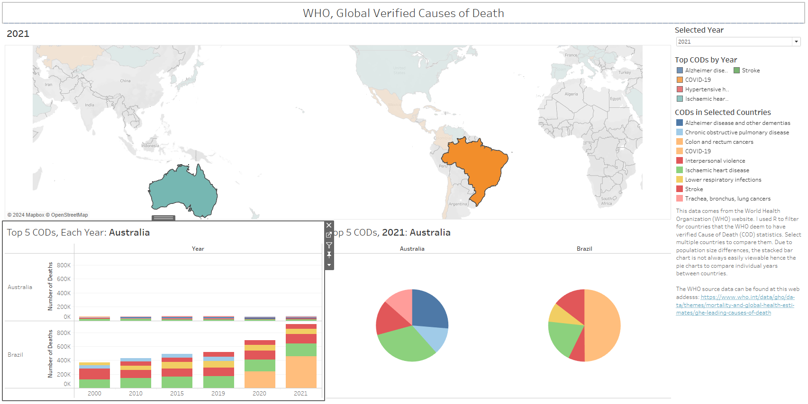

Edward Leland
Data Scientist | GIS Specialist | Archaeologist
LinkedIn Profile
Datacamp Certifications/Projects
Selected Presentations
Tableau Showcase: From Fixed Expressions to Dynamic Titles
Project description: With Tableau being all the rage in data informatics these days, I can’t hide behind my mastery of ggplot and matplotlib. As wonderful as those tools are for bespoke data visualization, 9/10 times in industry you just need some nice charts for a meeting with surface level user interaction. As such, I’ve joined the masses and, in addition to the arcane skills of bespoke script based graphics, I’m now proficient in Tableau. I found a fascinating data set from the World Health Organization (WHO) that consists of all the major causes of death across the globe for six different years between 2000 and 2021 and managed to make a dashboard that integrates some really cool functionalities of Tableau without being too overwhelming.
The Data
All the data used in this project can be found here. The WHO provides six excel workbooks of tracked causes of death for each country they monitor. Each workbook corresponds to a different year and the years available are 2000, 2010, 2015, 2019, 2020, 2021. Each workbook is divided into 9 sheets with the first being a notes page, the second a collection of all causes of deaths across all ages, and the rest are causes of death broken down by age categories. As I was interested in the top causes of death per country I used the second page of each workbook as my data source.
Each second page was a massive, 661x192, and formatted to be human readable with a lot of white space bullet point style organization. Additionally, these pages used conditional formatting to highlight countries with differing levels of statistical verification of their reported numbers. Green was high completeness/quality and transitioned through yellow to orange then finally red as the data became less complete/verified. As such, I chose to focus on the verified countries as any interesting visual trends seen in the final Tableau dashboard would have more statistical weight and meaning behind them.
R Based Data Prep
I use Tableau Public which doesn’t come with Tableau Prep, the GUI data manipulation tool. As such, all of my pre-processing was done in R. This required importing each excel workbook into R, grabbing the second sheet with the data we want, extracting only the relevant data, and doing a bunch of formatting to change the human readable spreadsheet into a CSV that Tableau accepted.
library(tidyverse) # For data manipulation functions (dplyr, tidyr, etc.)
library(readxl) # For reading Excel files
# Function to read the "All ages" sheet from the given Excel file and drop unnecessary rows
read_sheet <- function(file_name) {
sheet <- read_excel(file_name, sheet = "All ages")[-1:-5,]
return(sheet)
}
# Function to clean the "All ages" sheet data
clean_sheet <- function(sheet) {
all_ages_sheet <- sheet
# Filter out rows where the first column is either "Persons", NA, or "Sex"
# Eliminates summary, sex divided, and empty rows
all_ages_sheet <- all_ages_sheet %>%
filter(all_ages_sheet[[1]] == "Persons" | is.na(all_ages_sheet[[1]]) | all_ages_sheet[[1]] == "Sex")
# Remove the first 5 bullet point formatted info columns
all_ages_sheet <- all_ages_sheet[,-1:-5]
# Grab non-sub divided cause of death info and add in placeholder data
# This avoids dropping the column in a later step
causes <- all_ages_sheet[,1]
causes[1:7,] <- "Placeholder"
# Keep columns that represent verified country data based on specific criteria
# Hidden conditional formatting numbers in the row under 3 letter country codes
verified_country_data <- all_ages_sheet %>% select(where(~ !is.na(.[3]) && .[3] < 2))
# Combine the causes of death with the verified country data
verified_N_causes <- cbind(causes, verified_country_data)
# Remove rows that contain patterns like lowercase letters followed by a period
# Also remove rows with NA in the 6th column
df_initial <- verified_N_causes[!grepl("^[a-z]\\.$", verified_N_causes$...6) & !is.na(verified_N_causes$...6), ]
# Remove the first 4 rows
df_cleaned <- df_initial[-c(1:4), ]
# Set the first row as column names and remove the first 3 rows of data
colnames(df_cleaned) <- c("Cause of Death", as.character(df_initial[1, -1]))
df_cleaned <- df_cleaned[-1:-3,]
return(df_cleaned) # Return the cleaned dataset
}
# Function to build a dataset for a specific year
build_year_df <- function(df_cleaned, Year) {
# Extract the list of countries from the cleaned data, skipping the "Cause of Death" column
countries <- colnames(df_cleaned)[-1:-2] # Ignore the first two columns
# Initialize an empty list and dataframe to store the top causes of death for each country
top_causes_per_country <- list()
test <- data.frame()
# For each country, find the top 5 causes of death
for (country in countries) {
# Sort the data by the death numbers for the country in descending order
df_sorted <- df_cleaned %>%
arrange(desc(as.numeric(.data[[country]]))) %>%
select("Cause of Death", all_of(country)) %>%
head(5) # Select the top 5 causes of death for the country
# Add the country name and year to the sorted data
df_sorted$Country <- country
df_sorted$Year <- Year
# Rename the column containing the death numbers to "Numbers"
names(df_sorted)[names(df_sorted) == country] <- "Numbers"
# Append the sorted data to the result dataframe
test <- rbind(test, df_sorted)
}
# Convert the results to a dataframe and return it
top_causes_df <- as.data.frame(test)
}
# Function to extract the second year from a filename string (if it contains multiple years)
get_second_year <- function(string) {
# Find all four-digit numbers (representing years) in the filename
matches <- regmatches(string, gregexpr("\\d{4}", string))
# Return the second year if it exists, otherwise return NA
if (length(matches[[1]]) >= 2) {
return(matches[[1]][2])
} else {
return(NA)
}
}
# Set the working directory to the folder containing the Excel files
path <- "D:/Data_Projects/Tableau/WHO_Death/Data/Raw_Year_xl"
setwd(path)
# Get a list of all files in the directory
rlist <- list.files(".")
# Apply the get_second_year function to each file to extract the year information
Years <- sapply(rlist, get_second_year)
# Initialize an empty dataframe to store all the data from multiple years
all_data <- data.frame()
# Initialize a counter to track the current file
count <- 1
# Loop through each year and process the corresponding Excel file
for (year in Years) {
# Read, clean, and build the dataset for the current year
df_year <- build_year_df(clean_sheet(read_sheet(rlist[count])), year)
# Append the cleaned and processed data to the main dataframe
all_data <- rbind(all_data, df_year)
# Increment the counter to move to the next file
count <- count + 1
}
# Write the combined data for all years and countries to a CSV file
write.csv(all_data, file = "Top_5_All_Years.csv")
The final CSV looked like this:

Tableau Time
As we have data separated by space, time, and category, two types of charts immediately come to mind. Firstly, a world map to cover the spatial dimension and secondly a stacked bar chart of causes of death per year which takes care of time and category. I wanted the user to be able to select multiple countries and be able to visually understand trends in major causes of death as well as being able to select causes of death to be highlighted across the data. This posed the perfect challenge as it requires some tinkering across multiple chart and data types as well as actions, expressions, filters, parameters, and calculated fields. Thus, a relatively simple dashboard can have some interesting behaviors that users might not often get to see.
The Map

Tableau is awesome for auto-generating simple map based charts. Simply butting the country column from the CSV data source into the details section created a monocolor map. I wanted to add color in a meaningful way without overwhelming the dashboard user. To do so I decided that instead of using some kind of multi color scheme to represent multiple causes of death per country over the six years, I would highlight each country via its top cause of death for a year selected by the user. Making a Year Selected parameter that the user could change was easy but finding the top cause of death for each year for each country was a little tricky. Tableau uses its bespoke Tableau Calculation Language (TCL) for internal data wrangling and it definitely has some quirks. As such I usually put in a couple layers of redundancy to catch errors before they happen. First, I created a calculated field that grabbed the cause of death numbers for a chosen value of the Selected Year parameter:
Next I used the following expression:
The first line iterates, grabbing unique combinations of Country, COD, and Selected Year and returns their associated number of death values. The second line is basically the same thing but finds the maximum total number of deaths for each country across all causes of death. It does this by first calculating the sum of deaths for each combination of Country and Cause of Death (like the first expression) and then taking the maximum of those sums for each country. By comparing these two expressions we return true when a unique combination of Country, COD, and Selected Year equals the maximum number of death value for all combinations of that variable set. When this condition is met, the associated COD is returned to color the map.
Eagle eyed readers will see that this field is also in the filter pane. This is due to the expression returning two values for each country, Null and the correct COD. This is due to the redundancy I mentioned earlier and can easily be dealt with by excluding Null values from the Top Cause of Death by Year. TCL is awesome most of the time but I’ve run into some weird edge cases. I’d rather have consistent but redundant expressions with some hand curated exclusions than accidentally misrepresent the data I’m modeling.
The Stacked Bar Chart

This bar chart worksheet is simple on its own but gets some fun features when integrated into the dashboard but I’ll discuss those later. The columns are just the years but the rows are the number of deaths adjusted to whole thousands instead of fractional notation as well as an action related to the Country variable. This action links the map and the bar chart so that when a user selects one or more countries their data is displayed on the bar chart. Colors are just different causes of death and the Country Selected parameter comes into play once we get to the more interesting data behaviors on the dashboard.
There is one problem with this view though. When you select multiple countries that have vastly different populations, e.g. Australia vs Brazil, the scales of the bar charts remain constant. This results in the smaller chart getting squished to maintain a proper relative scale. Now, having shifting scale bars can be useful for some comparisons but I kind of liked the sense of difference in population that the squished bar chart showed. It was really interesting to me to get a sense of relative population size between countries just by looking at their death statistics.
However, I also wanted to be able to hover over the sections of the bar chart and get the hard numbers for the data. This is difficult on a squished graph so I made a third pie chart worksheet to easily compare countries during a single year.
The Pie Chart
This is was the simplest chart to build, just the country action to populate columns, the causes of death for color, and the Compare Year calculated field for the actual pie wedges.
Putting it All Together

After putting all three worksheets into the dashboard I wanted to increase the power and ease of quick visual inspection of this data set. This included the normal formatting of on hover tooltip info and all the other typical Tableau minutiae but I wanted to focus on small but powerful user experience tweaks that would make visual inspection of this data set not only more efficient but also more intuitive and interesting. To that end, I created a bunch of highlighting actions that allow the user to click on any cause of death in either the bar chart, the pie chart, or the list of CODs in Selected Countries and have that data pop out.
This immediately allows users to see trends across all years in each country as well as easily comparing CODs in the single selected year via the pie charts and you can even change the selected year to watch the highlighted section change in real time. The following image shows two more simple but fun features.
Highlighting via Top CODs by Year not only clears any user selected countries but also offers a quick method to track countries most affected by the spread of COVID-19 from 2019-2021. The final feature I implemented is kind of silly but I absolutely love little improvements to user experience so I made a dynamic title for the bar and pie charts:
To do this you have to use the Country Selected parameter in the title of each chart and give the dashboard the following action when the country selection is cleared:
Tableau makes things so easy that we can often forget to add in little details that would be second nature in an application development workspace. I searched for a while for a tutorial on the “correct” way to do this and found either people saying it couldn’t be done or using some baroquely complicated multi-worksheet solution to make a textbox appear/disappear. Usually people simply leave dependent charts blank, with some kind of default/placeholder data, or with a glaring None value. Something as small as a dynamically changing user direction in a title might seem of minimal importance on its own but, when combined with other quality of life tweaks, these small features add up to provide an enhanced user experience. UX experts are paid massive salaries to help web pages and web apps provide top tier user experiences. Tableau creators are often focused on the visual aspect of a dashboard and this is totally valid. A good dashboard needs to look nice as well as function and I’m sure I could use some graphic design pointers. However, UX is an essential aspect of the visual inspection of data and I like to attempt to add even small quality of life changes to basic Tableau dashboards whenever possible. Plus it is these functionality tweaks that force Tableau creators to get into the nitty gritty details of how Tableau handles data values in TCL and in the back end. The more mastery you have of those concepts the further you can push Tableau to handle more types of data in increasingly more complicated visuals.